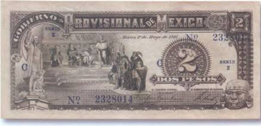

Тайны бумажных денег : Пришельцы из Африки

Все упомянутые выше версии и теории, касающиеся открытия Нового Света, повествовали о европейских путешественниках: испанцах, турках, викингах, ирландцах и, наконец, древних греках. Но на земле Америки есть немало свидетельств пребывания там в глубокой древности и гостей с других континентов, а возможно, даже из других миров…
Одной из неразгаданных пока тайн Центральной Америки являются огромные каменные головы с негроидными чертами лица. Эти монументальные скульптурные изображения, разбросанные по большой территории, достигают веса в 30 т, а в высоту иногда превышают 2,5 м. Сегодня они известны как «головы ольмеков». Цивилизация так называемых археологических ольмеков (как эти народы назывались на самом деле, неизвестно) датируется вторым тысячелетием до н. э., и ученые убеждены, что культура ольмеков легла в основу всех остальных культур Центральной Америки. Кстати, в отличие от появившихся гораздо позже майя и ацтеков, «археологические ольмеки» знали колесо [21]. Во всяком случае были найдены детские игрушки ольмеков в виде собачек на колесиках. Кстати, первая подобная находка была сделана американским археологом Мэтью Стирлингом. Тем самым, который в 30-х гг. XX в. обнаружил и первую каменную голову ольмеков.

К великому сожалению коллекционеров-бонистов, пока не выпущено ни одной банкноты с «головами ольмеков». Но чтобы составить себе представление о том, как они могут выглядеть, можно воспользоваться рисунками схожих скульптур с бон Мексики и Белиза. В первом случае это мексиканские 2 песо 1916 г. (рис. 79).
Помимо памятника Христофору Колумбу, на боне (в правом нижнем углу) видно достаточно выразительное изображение каменной головы (предположительно ацтекская богиня луны Койолынауки). Сразу бросаются в глаза крупные серьги, вдетые в мочки ее ушей. Нечто похожее можно встретить также и на купюрах центральноамериканского государства Белиз. В левом верхнем углу каждой купюры по меньшей мере трех последних выпусков присутствует рисунок головы, выточенной из камня древним скульптором (рис. 80).
Как уже было сказано, массивные изваяния, точный возраст которых неизвестен, имеют черты лица современных чернокожих африканцев: толстые губы, широкий приплюснутый нос и т. д. Впрочем, это не единственные изображения людей с негроидными чертами лица, которые были найдены в Америке. Имеются еще отдельные рельефы и стелы, на которых также угадываются африканцы. Доказательств же существования в Америке чернокожего народа до появления там первых рабов из Африки нет. Отсюда нетрудно сделать вывод, что в незапамятные времена Новый Свет посещали африканские мореплаватели. Надо сказать, что версия относительно того, что гости с Черного континента прибывали в Америку по морю, не выдерживает «критики», если повнимательнее всмотреться в «головы ольмеков».
Рис. 80. Белиз — 10 долларов 1990 г. (158?69 мм)Дело в том, что практически все каменные головы изображены в плотно прилегающих шлемах (иногда полностью закрывающих ушные раковины) с ремешками на мясистых подбородках. Мореходы едва ли стали бы путешествовать в таких неудобных головных уборах. Такими шлемами, а точнее подшлемниками, сегодня пользуются летчики и астронавты. Кстати, и на бумажных денежных знаках Мексики и Белиза представлены рисунки каменных голов, украшенных схожими загадочными «шлемами». Кем же были на самом деле люди, «позировавшие» древним американским художникам? Откуда они взялись в Центральной Америке и главное — как туда попали?